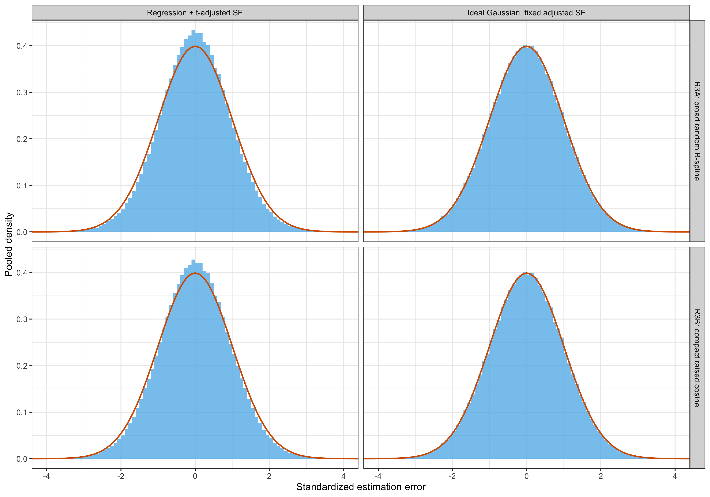
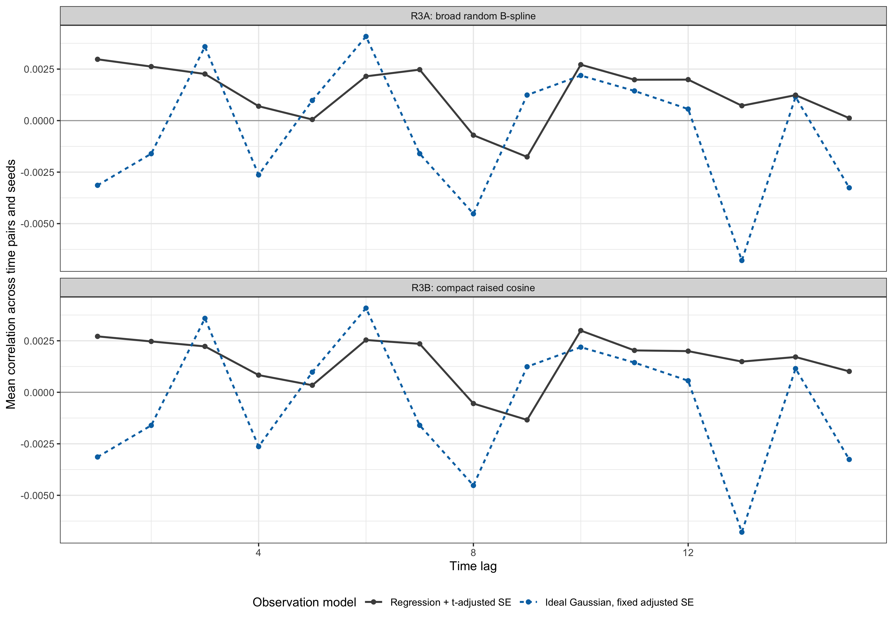
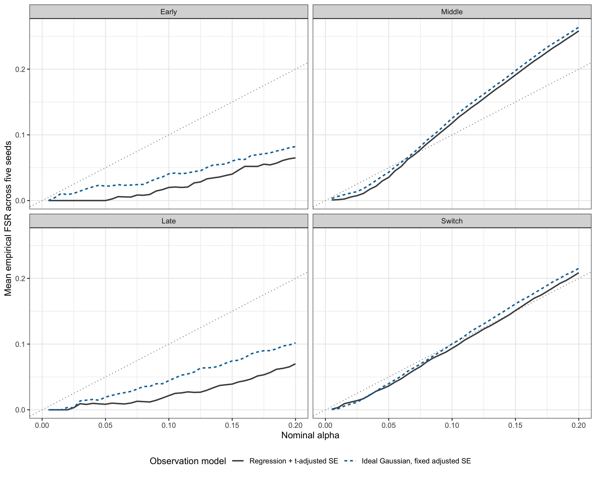
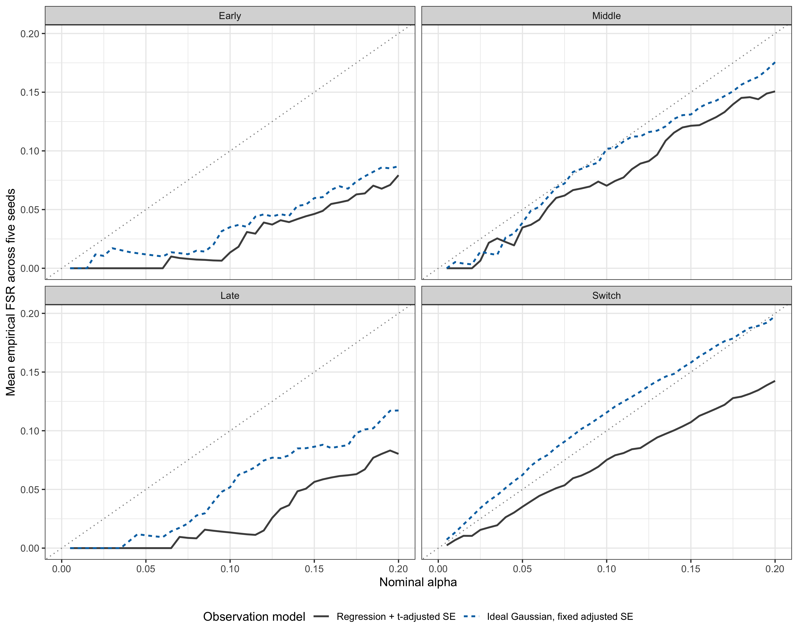
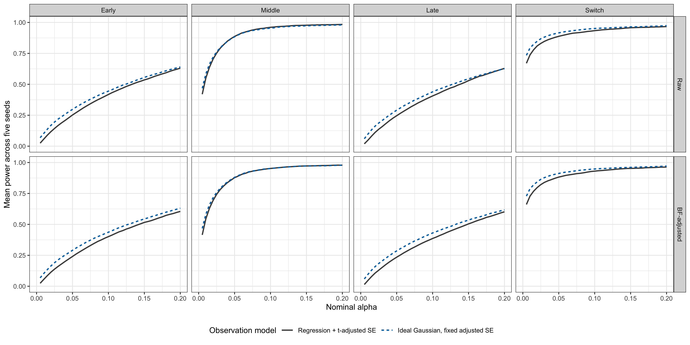
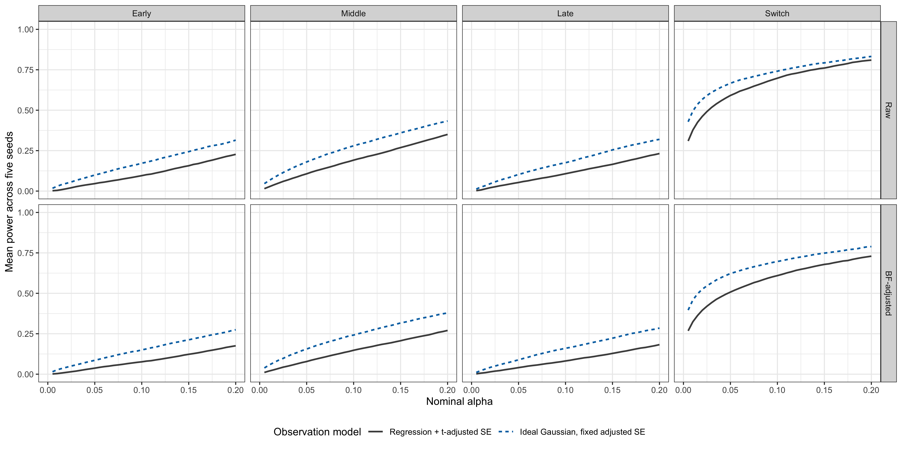

Last updated: 2026-08-27
Checks: 5 2
Knit directory: coderepo-local/
This reproducible R Markdown analysis was created with workflowr (version 1.7.2). The Checks tab describes the reproducibility checks that were applied when the results were created. The Past versions tab lists the development history.
The R Markdown is untracked by Git. To know which version of the R
Markdown file created these results, you’ll want to first commit it to
the Git repo. If you’re still working on the analysis, you can ignore
this warning. When you’re finished, you can run
wflow_publish to commit the R Markdown file and build the
HTML.
The global environment had objects present when the code in the R
Markdown file was run. These objects can affect the analysis in your R
Markdown file in unknown ways. For reproduciblity it’s best to always
run the code in an empty environment. Use wflow_publish or
wflow_build to ensure that the code is always run in an
empty environment.
The following objects were defined in the global environment when these results were created:
| Name | Class | Size |
|---|---|---|
| add_direct_interaction_efdr_results_to_genotype_output | function | 46.2 Kb |
| add_direct_interaction_results_to_genotype_output | function | 21 Kb |
| artifact_fingerprint | function | 7.1 Kb |
| assemble_one_per_gene_genotype_sample | function | 37.6 Kb |
| assess_matched_functional_truth | function | 34.8 Kb |
| bf_control_from_bf | function | 11 Kb |
| BF_update_linear_mixture_fash | function | 3.2 Kb |
| BF_update_simplified_fash | function | 14.5 Kb |
| column | character | 136 bytes |
| compact_linear_mixture_fash | function | 7.2 Kb |
| compute_alpha_curve | function | 29.9 Kb |
| compute_direct_interaction_permutation_null | function | 44.2 Kb |
| compute_dynamic_subgroup_alpha_curve | function | 23.9 Kb |
| compute_functional_lfsr | function | 20.7 Kb |
| compute_linear_mixture_log_likelihood | function | 30.1 Kb |
| configuration | list | 23.1 Kb |
| constant_component_prior_weight | function | 9.5 Kb |
| correct_se_from_t | function | 16.7 Kb |
| count_effective_sign_transitions | function | 8.1 Kb |
| default_revision_grid | function | 1.9 Kb |
| direct_interaction_degree_label | function | 3.3 Kb |
| direct_interaction_lrt_pvalues | function | 40.6 Kb |
| direct_interaction_method_name | function | 6.4 Kb |
| draw_correlated_noise | function | 5.5 Kb |
| dynamic_null_proportion | function | 1.4 Kb |
| effect_function | function | 19.8 Kb |
| empirical_fdr_qvalues | function | 31.8 Kb |
| estimate_eqtl_summaries_from_genotypes | function | 44 Kb |
| evaluate_direct_interaction_efdr | function | 19.9 Kb |
| evaluate_direct_interaction_lrt | function | 14.9 Kb |
| evaluate_fash_fits | function | 5.4 Kb |
| evaluate_fash_functional_testing | function | 62.6 Kb |
| evaluate_lfdr_method | function | 11.7 Kb |
| evaluate_parametric_method | function | 9.2 Kb |
| evaluate_simplified_fash_fit | function | 2.2 Kb |
| evaluate_temporal_functionals | function | 10.6 Kb |
| exact_balanced_counts | function | 8 Kb |
| exact_proportional_counts | function | 14.3 Kb |
| exact_temporal_truth_group_counts | function | 16.7 Kb |
| example_curves | list | 450.8 Kb |
| expand_grid_prior_weights | function | 14.2 Kb |
| expected_alpha_grid | numeric | 368 bytes |
| expected_class_counts | integer | 440 bytes |
| expected_class_probs | numeric | 456 bytes |
| expected_fashr_remote_sha | character | 152 bytes |
| expected_genotype_content_md5 | character | 1 Kb |
| expected_r3_source_sha256 | character | 2 Kb |
| expected_replicate_rows | integer | 56 bytes |
| expected_seed_list | integer | 80 bytes |
| expected_temporal_category_probs | numeric | 440 bytes |
| expected_truth_group_counts | integer | 720 bytes |
| expected_validation_alpha | numeric | 368 bytes |
| expected_validation_excess | numeric | 368 bytes |
| expected_validation_passed | logical | 360 bytes |
| extract_linear_mixture_prior_table | function | 8.8 Kb |
| extract_target_vcf_dosages | function | 46.9 Kb |
| fit_fash_for_revision | function | 12.8 Kb |
| fit_linear_mixture_fash | function | 2.6 Kb |
| fit_linear_mixture_fash_from_log_likelihood | function | 34.4 Kb |
| fit_simplified_fash | function | 37.1 Kb |
| fit_two_component_pi | function | 10.4 Kb |
| formal_class_counts | integer | 432 bytes |
| formal_true_pi0 | numeric | 56 bytes |
| format_decimal | function | 5.3 Kb |
| format_functional_table | function | 54.1 Kb |
| format_integer | function | 4.5 Kb |
| format_mc_interval | function | 14.6 Kb |
| format_pi0_table | function | 43.6 Kb |
| functional_cfsr_table | function | 11.4 Kb |
| functional_curve_key | function | 11.6 Kb |
| genotype_bspline_eqtl_output_stem | function | 4.9 Kb |
| genotype_content_md5 | function | 27 Kb |
| genotype_cosine_multipeak_output_stem | function | 9.1 Kb |
| genotype_dynamic_eqtl_output_stem | function | 4.9 Kb |
| genotype_sampling_display | data.frame | 2.7 Kb |
| genotype_sampling_table | data.frame | 2.5 Kb |
| genotype_selection_summary | data.frame | 3.4 Kb |
| genotype_spiky_transient_output_stem | function | 9.6 Kb |
| get_fash_fdr_table | function | 5.6 Kb |
| get_fash_lfdr | function | 4.2 Kb |
| get_observed_direct_interaction_lrt | function | 5.5 Kb |
| interpolate_true_curve | function | 6.7 Kb |
| is_null_class | function | 4.1 Kb |
| linear_model_residual_summary | function | 3.6 Kb |
| local_cubic_bspline_lobe | function | 14.2 Kb |
| log_marginal_common_intercept | function | 19.9 Kb |
| log_sum_exp_pair | function | 2.8 Kb |
| make_ar1_correlation | function | 2 Kb |
| make_direct_interaction_base_design | function | 14.7 Kb |
| make_exchangeable_correlation | function | 2 Kb |
| make_fash_datasets_from_eqtl_summary | function | 17.7 Kb |
| make_lag1_correlation | function | 10.4 Kb |
| make_maf_balanced_class_targets | function | 30 Kb |
| make_temporal_functionals | function | 47.2 Kb |
| make_time_grid | function | 1.2 Kb |
| mc_alpha | data.frame | 173.7 Kb |
| mc_alpha_005 | data.frame | 9.4 Kb |
| mc_alpha_replicates | data.frame | 379.1 Kb |
| mc_output_dir | character | 320 bytes |
| mc_output_id | character | 296 bytes |
| mc_pi0 | data.frame | 2.4 Kb |
| mc_pointwise_ranges | data.frame | 55.4 Kb |
| mechanism_labels | character | 528 bytes |
| mechanism_order | character | 192 bytes |
| method_order | character | 192 bytes |
| metric_at | function | 5.6 Kb |
| numeric_vector_label | function | 1.8 Kb |
| object_md5 | function | 4.4 Kb |
| parse_tested_pair_ids | function | 11.5 Kb |
| pi0_table | data.frame | 1.7 Kb |
| plot_alpha_limits | numeric | 64 bytes |
| plot_constant_dynamic_examples | function | 36 Kb |
| plot_constant_iwp2_examples | function | 36 Kb |
| plot_cosine_peak_cell_examples | function | 65.6 Kb |
| plot_empirical_fdr_alpha_curve_grid | function | 34.4 Kb |
| plot_empirical_fdr_alpha_curves | function | 31.6 Kb |
| plot_genotype_eqtl_examples | function | 40.8 Kb |
| plot_mc_alpha_curves | function | 53.2 Kb |
| plot_mc_functional_curve_grid | function | 399.6 Kb |
| plot_mc_shape_power_grid | function | 42.8 Kb |
| plot_power_alpha_curve_grid | function | 29.1 Kb |
| plot_power_alpha_curves | function | 26.5 Kb |
| plot_truth_examples | function | 187 Kb |
| pointwise_range_columns | character | 400 bytes |
| r1_r2_manifest | list | 28.4 Kb |
| r1_r2_manifest_path | character | 168 bytes |
| r1_r2_output_dir | character | 152 bytes |
| r1_reference | list | 44.1 Mb |
| r3_complete_flag_path | character | 336 bytes |
| r3_completion | character | 2.1 Kb |
| r3_manifest | list | 39 Kb |
| r3_manifest_path | character | 336 bytes |
| r3_replicate_alpha_path | character | 376 bytes |
| r3_replicates | list | 2.1 Mb |
| r3_scientific_validation_path | character | 352 bytes |
| r3a_alpha | data.frame | 89.8 Kb |
| r3a_alpha_005 | data.frame | 7.3 Kb |
| r3a_table | data.frame | 3.5 Kb |
| r3b_alpha | data.frame | 91 Kb |
| r3b_alpha_005 | data.frame | 7.3 Kb |
| r3b_table | data.frame | 3.4 Kb |
| raised_cosine_peak | function | 10.2 Kb |
| random_bspline_truth_curve | function | 32.9 Kb |
| rank_revision_methods | function | 2.5 Kb |
| read_vcf_sample_ids | function | 12.4 Kb |
| reassign_effect_simulation_by_maf | function | 38.4 Kb |
| replicate_curve_columns | character | 856 bytes |
| replicate_curve_keys | character | 312 bytes |
| replicate_groups | list | 227 Kb |
| required_cache_paths | character | 4 Kb |
| required_validation_columns | character | 616 bytes |
| revision_component_seeds | function | 8.5 Kb |
| revision_final_summary_methods | function | 1.8 Kb |
| revision_method_order | function | 9.4 Kb |
| revision_method_styles | function | 92.8 Kb |
| revision_output_dirs | function | 3.5 Kb |
| run_constant_iwp2_simplified_comparison | function | 37.2 Kb |
| run_genotype_level_bspline_eqtl_simulation | function | 92.4 Kb |
| run_genotype_level_dynamic_eqtl_simulation | function | 92.4 Kb |
| run_revision_simulation | function | 22.9 Kb |
| run_revision_smoke_test | function | 4.2 Kb |
| sample_constrained_broad_bspline_truth | function | 47.8 Kb |
| sample_effect_classes | function | 9.2 Kb |
| sample_labeled_random_bspline_truth | function | 28.3 Kb |
| sample_multispike_local_bspline_truth | function | 117.2 Kb |
| sample_one_tested_variant_per_gene | function | 13.6 Kb |
| sample_spiky_local_bspline_truth | function | 61.8 Kb |
| sample_targeted_local_bspline_lobe | function | 6.9 Kb |
| sample_targeted_local_bspline_truth | function | 86.8 Kb |
| scaled_time_polynomial | function | 5.8 Kb |
| scientific_validation | data.frame | 2.4 Kb |
| seed | integer | 56 bytes |
| seed_maf | data.frame | 2.5 Kb |
| seed_name | character | 112 bytes |
| seed_sampling | data.frame | 2.2 Kb |
| shared_genotype_cache | list | 25.5 Mb |
| shared_genotype_cache_path | character | 232 bytes |
| simulate_bspline_effect | function | 8.9 Kb |
| simulate_bspline_effect_on_grids | function | 24.9 Kb |
| simulate_covariate_matrix | function | 7.3 Kb |
| simulate_eqtl_expression_from_genotypes | function | 44.9 Kb |
| simulate_genotype_matrix | function | 18.9 Kb |
| simulate_iwp_dataset | function | 12.1 Kb |
| simulate_labeled_random_bspline_effect_set | function | 59 Kb |
| simulate_local_bspline_transient_effect | function | 32.3 Kb |
| simulate_matched_functional_effect_set | function | 208.9 Kb |
| simulate_multi_smooth_abrupt_effect | function | 12.8 Kb |
| simulate_paired_local_bspline_effect_sets | function | 45.6 Kb |
| simulate_raised_cosine_multipeak_effect_set | function | 237.9 Kb |
| simulate_revision_datasets | function | 23.1 Kb |
| simulate_shape_dataset | function | 12.8 Kb |
| simulate_smooth_abrupt_effect | function | 5.3 Kb |
| simulate_targeted_local_bspline_effect_set | function | 151.2 Kb |
| simulate_variant_effect_curves | function | 31.1 Kb |
| solve_from_chol | function | 1.3 Kb |
| summarize_dynamic_effect_geometry | function | 15.8 Kb |
| summarize_linear_mixture_prior_fit | function | 9.6 Kb |
| summarize_mc_alpha_curves | function | 35.6 Kb |
| summarize_mc_functional_alpha_curves | function | 61.5 Kb |
| summarize_mc_pi0 | function | 16.5 Kb |
| summarize_mc_values | function | 12.4 Kb |
| summarize_method_results | function | 20.5 Kb |
| summarize_se_correction | function | 6.5 Kb |
| summarize_targeted_truth_curve | function | 20.4 Kb |
| summarize_truth_maf_balance | function | 20.2 Kb |
| summary_dir | character | 328 bytes |
| summary_range_index | integer | 2.5 Kb |
| target_order | character | 304 bytes |
| targeted_local_bspline_parameter_ranges | function | 13.4 Kb |
| targeted_time_window | function | 6.2 Kb |
| temporal_middle_membership | function | 14 Kb |
| truth_group_counts | data.frame | 3 Kb |
| truth_maf_balance | data.frame | 4.7 Kb |
| truth_maf_balance_table | data.frame | 1.7 Kb |
| truth_maf_display | data.frame | 3.5 Kb |
| validate_compact_linear_mixture_fash | function | 61 Kb |
| validate_covariate_matrix | function | 9.1 Kb |
| validate_genotype_matrix | function | 10.4 Kb |
| validate_integer_scalar | function | 4.4 Kb |
| validate_linear_mixture_fash | function | 71.6 Kb |
| validate_linear_mixture_grid | function | 6.9 Kb |
| validate_real_genotype_sample | function | 31.7 Kb |
| validate_simplified_sigma_profile | function | 33.7 Kb |
| validate_time_correlation | function | 16.5 Kb |
| validation_passed | logical | 360 bytes |
| weighted_lm_pvalue | function | 11.6 Kb |
The command set.seed(20251109) was run prior to running
the code in the R Markdown file. Setting a seed ensures that any results
that rely on randomness, e.g. subsampling or permutations, are
reproducible.
Great job! Recording the operating system, R version, and package versions is critical for reproducibility.
Nice! There were no cached chunks for this analysis, so you can be confident that you successfully produced the results during this run.
Great job! Using relative paths to the files within your workflowr project makes it easier to run your code on other machines.
Great! You are using Git for version control. Tracking code development and connecting the code version to the results is critical for reproducibility.
The results in this page were generated with repository version cc95532. See the Past versions tab to see a history of the changes made to the R Markdown and HTML files.
Note that you need to be careful to ensure that all relevant files for
the analysis have been committed to Git prior to generating the results
(you can use wflow_publish or
wflow_git_commit). workflowr only checks the R Markdown
file, but you know if there are other scripts or data files that it
depends on. Below is the status of the Git repository when the results
were generated:
Ignored files:
Ignored: .DS_Store
Ignored: .Rhistory
Ignored: .Rproj.user/
Ignored: Rplots.pdf
Ignored: analysis/.DS_Store
Ignored: analysis/.Rhistory
Ignored: code/.DS_Store
Ignored: code/.Rhistory
Ignored: code/revision_simulations/.DS_Store
Ignored: data/appendixB/
Ignored: data/dynamic_eQTL_real/
Ignored: data/revision_simulations/
Ignored: data/toy_example/
Ignored: output/dynamic_eQTL_real/
Ignored: output/pdf/
Ignored: output/playwright/
Ignored: output/revision_simulations/
Ignored: scripts/
Untracked files:
Untracked: analysis/revision_internal_r3_ideal_gaussian_measurement.rmd
Untracked: code/revision_simulations/internal/r3_ideal_gaussian_measurement/
Untracked: code/revision_simulations/r3_r4_fashr0143/24_r3_full_universe_iwp1_mixture_core.R
Untracked: code/revision_simulations/r3_r4_fashr0143/24_r3_full_universe_iwp1_mixture_fashr0143.R
Untracked: code/revision_simulations/r3_r4_fashr0143/24_r3_full_universe_iwp1_mixture_fashr0143.sbatch
Untracked: code/revision_simulations/r3_r4_fashr0143/test_r3_iwp1_temporal_mixture_production.R
Untracked: code/revision_simulations/shared/r3_iwp1_temporal_mixture_contract.R
Unstaged changes:
Modified: analysis/revision_functional_testing_simulation.rmd
Modified: code/revision_simulations/r3_functional_testing/reporting.R
Modified: code/revision_simulations/r3_functional_testing/test_reporting.R
Note that any generated files, e.g. HTML, png, CSS, etc., are not included in this status report because it is ok for generated content to have uncommitted changes.
There are no past versions. Publish this analysis with
wflow_publish() to start tracking its development.
This is an internal analysis record and is not linked from the workflowr index.
The broad random B-spline simulation in R3 shows increasing Middle empirical false sign rate (FSR) above the nominal level after approximately \(\alpha=0.05\). The current R3 observation pipeline simulates individual-level expression, fits a separate genotype regression at each time point, and maps the resulting t-based standard errors onto a normal scale. Does the same pattern remain when the summary statistics follow the Gaussian likelihood used by FASH exactly?
The comparison changes one layer only:
Both truth mechanisms use five seeds and 6,362 units per seed. Broad
random B-spline truth is the primary diagnostic; compact raised-cosine
truth is the same-design control. The truth definitions, class counts,
relative clearance margins, open Middle interval \(3<t<12\), and all FASH settings are
unchanged. Early/Middle/Late probabilities are
0.29/0.42/0.29, giving exact location counts
369/534/369; the six location-by-switch cells contain
185/184/267/267/185/184 dynamic units.
fixed_design <- data.frame(
Feature = c(
"Units per seed",
"Seeds",
"Truth mechanisms",
"Early/Middle/Late counts",
"Middle definition",
"Candidate universe",
"FASH version",
"Adjusted-SE role"
),
Value = c(
format(ideal_configuration$J, big.mark = ","),
paste(ideal_configuration$seed_list, collapse = ", "),
"Broad random B-spline; compact raised cosine",
"369 / 534 / 369",
ideal_configuration$middle_expression,
"All simulated units",
paste0(
ideal_manifest$package_provenance$version,
" at ",
substr(ideal_manifest$package_provenance$remote_sha, 1, 12)
),
"Regenerated from current R3, then treated as fixed"
),
stringsAsFactors = FALSE
)
knitr::kable(
fixed_design,
align = "ll",
caption = "Table 1. Inputs held fixed in the observation-model isolation experiment."
)| Feature | Value |
|---|---|
| Units per seed | 6,362 |
| Seeds | 12345, 22345, 32345, 42345, 52345 |
| Truth mechanisms | Broad random B-spline; compact raised cosine |
| Early/Middle/Late counts | 369 / 534 / 369 |
| Middle definition | 3 < t < 12 |
| Candidate universe | All simulated units |
| FASH version | 0.1.43 at bf223df75da6 |
| Adjusted-SE role | Regenerated from current R3, then treated as fixed |
For the current R3 pipeline, let \(\widehat\beta^{\mathrm{reg}}_{jt}\) and \(s^{\mathrm{adj}}_{jt}\) denote the per-time regression estimate and its final t-adjusted standard error. Its standardized estimation error is
\[ Z^{\mathrm{reg}}_{jt} = \frac{\widehat\beta^{\mathrm{reg}}_{jt}-\beta^{\mathrm{true}}_{jt}} {s^{\mathrm{adj}}_{jt}}. \]
The ideal experiment conditions on the same regenerated \(s^{\mathrm{adj}}_{jt}\) and draws
\[ \widehat\beta^{\mathrm{ideal}}_{jt} = \beta^{\mathrm{true}}_{jt} +s^{\mathrm{adj}}_{jt}Z^{\mathrm{ideal}}_{jt}, \qquad Z^{\mathrm{ideal}}_{jt}\overset{\mathrm{iid}}{\sim}N(0,1). \]
No second t-based correction is applied to \(\widehat\beta^{\mathrm{ideal}}\). This is therefore an oracle experiment conditional on the realized adjusted-SE matrix. It isolates the summary-level observation likelihood; it does not remove the mismatch between broad B-spline truth and the IWP1 working prior, and it does not validate the estimated-SE procedure itself.
diagnostic_display <- standardized_error_summary
diagnostic_display$truth_mechanism <- NULL
for (column in c(
"mean", "sd", "skewness", "excess_kurtosis", "tail_abs_1_96",
"tail_abs_3"
)) {
diagnostic_display[[column]] <- formatC(
diagnostic_display[[column]], format = "f", digits = 4
)
}
names(diagnostic_display) <- c(
"Truth mechanism",
"Observation model",
"Mean",
"SD",
"Skewness",
"Excess kurtosis",
"Pr(|Z| > 1.96)",
"Pr(|Z| > 3)"
)
knitr::kable(
diagnostic_display,
align = "llrrrrrr",
caption = paste(
"Table 2. Standardized estimation-error summaries.",
"Each entry is the mean of the corresponding seed-level statistic."
)
)| Truth mechanism | Observation model | Mean | SD | Skewness | Excess kurtosis | Pr(|Z| > 1.96) | Pr(|Z| > 3) |
|---|---|---|---|---|---|---|---|
| R3A: broad random B-spline | Regression + t-adjusted SE | 0.0007 | 0.9590 | 0.0009 | 0.2882 | 0.0434 | 0.0032 |
| R3A: broad random B-spline | Ideal Gaussian, fixed adjusted SE | -0.0011 | 1.0007 | 0.0011 | 0.0094 | 0.0502 | 0.0028 |
| R3B: compact raised cosine | Regression + t-adjusted SE | 0.0007 | 0.9669 | 0.0001 | 0.2646 | 0.0446 | 0.0034 |
| R3B: compact raised cosine | Ideal Gaussian, fixed adjusted SE | -0.0011 | 1.0007 | 0.0011 | 0.0094 | 0.0502 | 0.0028 |
plot_standardized_error_histogram()
Figure 1. Pooled standardized estimation-error distributions under the regression-derived and ideal-Gaussian observation models. Columns identify observation models, rows identify truth mechanisms, and the orange curve is the standard-normal density.
plot_standardized_error_lag_correlation()
Figure 2. Lag-specific correlations of standardized estimation errors. Curves are means over five seeds and over all time-point pairs at each lag.
These diagnostics verify what the intervention changes. The ideal arm has standard-normal marginal errors and no imposed time correlation by construction; the regenerated regression arm records the corresponding errors after the full current R3 regression and t-adjustment pipeline.
The primary statistic is the maximum, over \(\alpha\in\{0.05,0.055,\ldots,0.20\}\), of the five-seed mean BF-adjusted Middle empirical FSR minus nominal alpha. The comparison was fixed before the ideal-Gaussian results were observed; no post hoc pass/fail threshold is used.
primary_display <- primary_comparison[c(
"truth_mechanism_label",
"maximum_mean_fsr_excess_current",
"alpha_at_maximum_current",
"maximum_mean_fsr_excess_ideal",
"alpha_at_maximum_ideal",
"current_minus_ideal_excess"
)]
for (column in setdiff(names(primary_display), "truth_mechanism_label")) {
primary_display[[column]] <- formatC(
primary_display[[column]], format = "f", digits = 4
)
}
names(primary_display) <- c(
"Truth mechanism",
"Current maximum excess",
"Current alpha",
"Ideal maximum excess",
"Ideal alpha",
"Current minus ideal excess"
)
knitr::kable(
primary_display,
align = "lrrrrr",
caption = paste(
"Table 3. Primary BF-adjusted Middle calibration comparison.",
"Positive current-minus-ideal excess indicates attenuation under the",
"ideal observation model."
)
)| Truth mechanism | Current maximum excess | Current alpha | Ideal maximum excess | Ideal alpha | Current minus ideal excess |
|---|---|---|---|---|---|
| R3A: broad random B-spline | 0.0582 | 0.2000 | 0.0638 | 0.2000 | -0.0056 |
| R3B: compact raised cosine | -0.0101 | 0.0700 | 0.0021 | 0.0800 | -0.0121 |
plot_fsr_comparison("random_bspline")
Figure 3. BF-adjusted functional empirical FSR under broad random B-spline truth. Curves compare five-seed means from the current regression-derived and ideal-Gaussian observation models; the dotted diagonal is nominal alpha.
plot_fsr_comparison("raised_cosine")
Figure 4. BF-adjusted functional empirical FSR under compact raised-cosine truth. Curves compare five-seed means from the current regression-derived and ideal-Gaussian observation models; the dotted diagonal is nominal alpha.
In this five-seed run, idealizing the observation model does not
attenuate the broad random B-spline Middle deviation: its maximum mean
FSR excess is 0.0638 under ideal-Gaussian measurements and
0.0582 under the current regression pipeline. For compact
raised-cosine truth, the corresponding values are 0.0021
and -0.0101. The regression and t-adjustment pipeline is
therefore not a sufficient explanation for the broad random B-spline
pattern.
middle_display <- middle_selected_summary
middle_display$truth_mechanism <- NULL
for (column in c(
"alpha", "mean_empirical_fsr", "minimum_seed_fsr", "maximum_seed_fsr",
"mean_power"
)) {
middle_display[[column]] <- formatC(
middle_display[[column]], format = "f", digits = 3
)
}
for (column in c("mean_calls", "mean_false_calls")) {
middle_display[[column]] <- formatC(
middle_display[[column]], format = "f", digits = 1
)
}
names(middle_display) <- c(
"Truth mechanism",
"Observation model",
"Alpha",
"Mean FSR",
"Minimum seed FSR",
"Maximum seed FSR",
"Mean power",
"Mean calls",
"Mean false calls"
)
knitr::kable(
middle_display,
align = "llrrrrrrr",
caption = paste(
"Table 4. BF-adjusted Middle results at selected nominal levels.",
"Seed minima and maxima describe the five Monte Carlo replications."
)
)| Truth mechanism | Observation model | Alpha | Mean FSR | Minimum seed FSR | Maximum seed FSR | Mean power | Mean calls | Mean false calls |
|---|---|---|---|---|---|---|---|---|
| R3A: broad random B-spline | Regression + t-adjusted SE | 0.050 | 0.035 | 0.027 | 0.044 | 0.878 | 485.8 | 17.2 |
| R3A: broad random B-spline | Regression + t-adjusted SE | 0.100 | 0.118 | 0.102 | 0.129 | 0.952 | 576.4 | 68.0 |
| R3A: broad random B-spline | Regression + t-adjusted SE | 0.150 | 0.191 | 0.181 | 0.207 | 0.972 | 642.0 | 122.8 |
| R3A: broad random B-spline | Regression + t-adjusted SE | 0.200 | 0.258 | 0.249 | 0.273 | 0.979 | 704.6 | 182.0 |
| R3A: broad random B-spline | Ideal Gaussian, fixed adjusted SE | 0.050 | 0.043 | 0.035 | 0.051 | 0.880 | 491.2 | 21.2 |
| R3A: broad random B-spline | Ideal Gaussian, fixed adjusted SE | 0.100 | 0.125 | 0.117 | 0.133 | 0.952 | 581.0 | 72.8 |
| R3A: broad random B-spline | Ideal Gaussian, fixed adjusted SE | 0.150 | 0.198 | 0.191 | 0.206 | 0.972 | 647.0 | 127.8 |
| R3A: broad random B-spline | Ideal Gaussian, fixed adjusted SE | 0.200 | 0.264 | 0.257 | 0.269 | 0.978 | 709.6 | 187.2 |
| R3B: compact raised cosine | Regression + t-adjusted SE | 0.050 | 0.035 | 0.000 | 0.070 | 0.078 | 43.4 | 1.6 |
| R3B: compact raised cosine | Regression + t-adjusted SE | 0.100 | 0.070 | 0.035 | 0.090 | 0.148 | 85.0 | 6.0 |
| R3B: compact raised cosine | Regression + t-adjusted SE | 0.150 | 0.121 | 0.087 | 0.147 | 0.207 | 125.6 | 15.2 |
| R3B: compact raised cosine | Regression + t-adjusted SE | 0.200 | 0.151 | 0.116 | 0.168 | 0.270 | 170.0 | 25.6 |
| R3B: compact raised cosine | Ideal Gaussian, fixed adjusted SE | 0.050 | 0.039 | 0.011 | 0.060 | 0.155 | 86.4 | 3.4 |
| R3B: compact raised cosine | Ideal Gaussian, fixed adjusted SE | 0.100 | 0.102 | 0.075 | 0.121 | 0.242 | 143.8 | 14.6 |
| R3B: compact raised cosine | Ideal Gaussian, fixed adjusted SE | 0.150 | 0.131 | 0.114 | 0.145 | 0.317 | 194.6 | 25.4 |
| R3B: compact raised cosine | Ideal Gaussian, fixed adjusted SE | 0.200 | 0.176 | 0.153 | 0.193 | 0.379 | 245.2 | 43.0 |
plot_power_comparison("random_bspline")
Figure 5. Functional-testing power under broad random B-spline truth. Rows identify Raw and BF-adjusted FASH, columns identify functional targets, and curves compare the two observation models.
plot_power_comparison("raised_cosine")
Figure 6. Functional-testing power under compact raised-cosine truth. Rows identify Raw and BF-adjusted FASH, columns identify functional targets, and curves compare the two observation models.
The production experiment code is contained in
code/revision_simulations/internal/r3_ideal_gaussian_measurement/.
The runner pins the frozen R3 simulation functions, real-genotype
helper, genotype cache, temporal-mixture contract, fashr version and git
SHA, genotype-content digests, and the dedicated ideal measurement seed
rule. Each mechanism-by-seed result is saved atomically and validated
before reuse. The production summary applies a tolerance of \(10^{-12}\) at the nominal-alpha boundaries.
The final directory is promoted only after all ten replicates,
summaries, manifest, and completion flag pass their contracts.
The Midway3 job is submitted manually from the workspace:
cd /project/mstephens/ziangzhang/fash/workspace
sbatch slurm/25_r3_ideal_gaussian_measurement_iwp1_mixture.sbatchThe immutable server output directory is
workspace/results/revision_simulations/r3_ideal_gaussian_known_t_adjusted_se_matched_truth_open_middle_3_12_center_aligned_iwp1_geometry_mixture_full_universe_fashr0143_pilot5/.
The page reads the identical validated local cache under
output/revision_simulations/internal/ with the same result
ID.
sessionInfo()R version 4.5.1 (2025-06-13)
Platform: aarch64-apple-darwin20
Running under: macOS Sequoia 15.6.1
Matrix products: default
BLAS: /System/Library/Frameworks/Accelerate.framework/Versions/A/Frameworks/vecLib.framework/Versions/A/libBLAS.dylib
LAPACK: /Library/Frameworks/R.framework/Versions/4.5-arm64/Resources/lib/libRlapack.dylib; LAPACK version 3.12.1
locale:
[1] C.UTF-8/C.UTF-8/C.UTF-8/C/C.UTF-8/C.UTF-8
time zone: America/Chicago
tzcode source: internal
attached base packages:
[1] stats graphics grDevices utils datasets methods base
loaded via a namespace (and not attached):
[1] gtable_0.3.6 jsonlite_2.0.0 dplyr_1.1.4 compiler_4.5.1
[5] promises_1.5.0 tidyselect_1.2.1 Rcpp_1.1.1-1.1 stringr_1.6.0
[9] git2r_0.36.2 dichromat_2.0-0.1 later_1.4.4 jquerylib_0.1.4
[13] scales_1.4.0 yaml_2.3.12 fastmap_1.2.0 ggplot2_4.0.3
[17] R6_2.6.1 labeling_0.4.3 generics_0.1.4 workflowr_1.7.2
[21] knitr_1.50 tibble_3.3.0 rprojroot_2.1.1 bslib_0.9.0
[25] pillar_1.11.1 RColorBrewer_1.1-3 rlang_1.2.0 cachem_1.1.0
[29] stringi_1.8.9 httpuv_1.6.16 xfun_0.55 S7_0.2.2
[33] fs_1.6.6 sass_0.4.10 otel_0.2.0 cli_3.6.6
[37] withr_3.0.3 magrittr_2.0.5 digest_0.6.39 grid_4.5.1
[41] rstudioapi_0.17.1 lifecycle_1.0.5 vctrs_0.7.3 evaluate_1.0.5
[45] glue_1.8.1 farver_2.1.2 whisker_0.4.1 rmarkdown_2.30
[49] tools_4.5.1 pkgconfig_2.0.3 htmltools_0.5.9